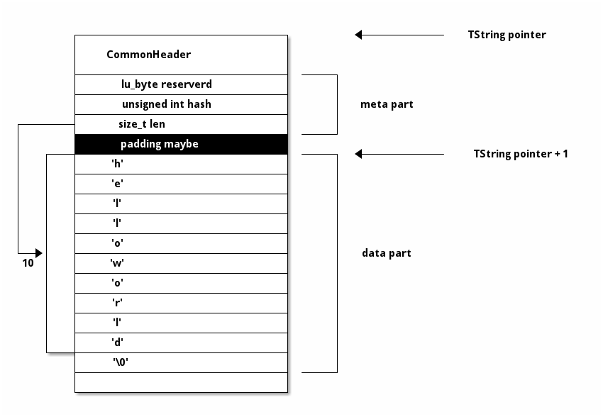
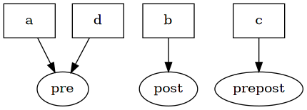
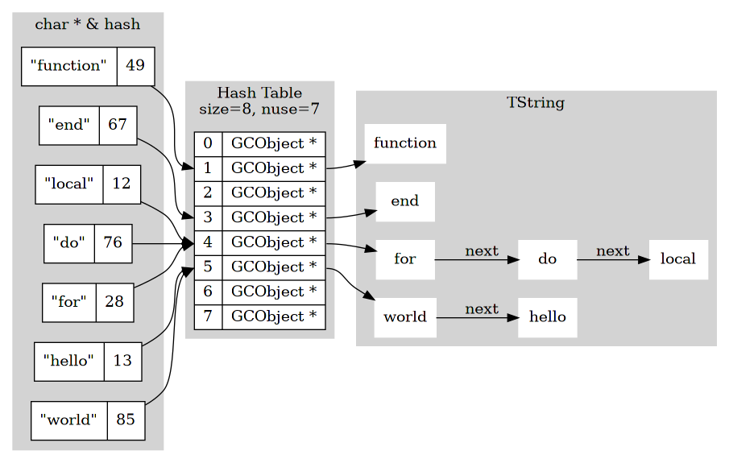
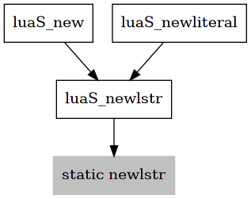

string
string 是多数编程语言内建的类型，lua 也不例外。
lua 代码中使用字符串是非常方便的，呼之即来，使用后也可以不闻不问。 因为 string 在底层自动新建，并由 gc 自动回收，极大方便了上层使用者。
更重要的是，string 同时也在 lua 的底层实现发挥着重要的作用。
本章就来讲解 lua 中的 string。
1 structure
在 object 章节中已经提到，string 类型在 GCObject 中用 TString ts 表示。
196: /* 197: ** String headers for string table 198: */ 199: typedef union TString { 200: L_Umaxalign dummy; /* ensures maximum alignment for strings */ 201: struct { 202: CommonHeader; 203: lu_byte reserved; 204: unsigned int hash; 205: size_t len; 206: } tsv; 207: } TString;
TString 看上去是 union 结构，但是 dummy 只用来做对齐，并不用作实际用途， 所以考虑这一点，TString 本质还是一个 struct 结构。
除去 CommonHeader 部分，新增了 3 个字段，存储 string 的元数据， 而实际的数据部分，紧紧跟在 TString 的后面，而没有使用如 next 之类的指针来引用，是一种巧妙的方法。

data 部分是通用的 char[]。
meta 部分，用新增的 3 个字段来记录，
- reserved，用于关键字（如 if，end 等），到 lex 章节再详细解释
- hash，由 data 计算得到的 hash 值，在 new 小节详细解释
- len，data 长度，不包含最后的 '\0'
明确了这种结构之后，相关的宏就很容易理解。
210: #define getstr(ts) cast(const char *, (ts) + 1)
使用 ts + 1 来索引到 data 的位置，并取到 data 数据。
16: #define sizestring(s) (sizeof(union TString)+((s)->len+1)*sizeof(char))
TString 的空间大小就是 meta + data 的大小，+1 是因为要计入末尾的 '\0'。
2 new
2.1 immutable
多数 lua 用户不知道的是，lua 中所有的 string 都是不可变的，且只有一份留存在内存中。
比如如下示例代码，
local a = "pre" local b = "post" local c = a .. b local d = "pre"
变量 a d 指向同一个 string 类型的 TValue（还记得吗？）
a .. b 连接的过程没有修改 "pre" 或者 "post" ，而是新建了 "prepost" ，新变量 c 指向它。

2.2 string table
前面提到的 immutable 的特性，正是对底层实现的一种表面呈现。
实际上，所有新建的 TString 都集合存储在 global_State 中的 stringtable。
65: /* 66: ** `global state', shared by all threads of this state 67: */ 68: typedef struct global_State { 69: stringtable strt; /* hash table for strings */
38: typedef struct stringtable { 39: GCObject **hash; 40: lu_int32 nuse; /* number of elements */ 41: int size; 42: } stringtable;
stringtable 就是教科书式的 hash table 实现。
- hash，元素为
GCObject *的桶数组 - nuse，已存储 TString 的数量
- size，桶数组的长度

2.3 method

string 模块中提供的方法非常少，新建 TString 的核心过程实现在 luaS_newlstr 和 newlstr 中。
75: TString *luaS_newlstr (lua_State *L, const char *str, size_t l) { 76: GCObject *o; 77: unsigned int h = cast(unsigned int, l); /* seed */ 78: size_t step = (l>>5)+1; /* if string is too long, don't hash all its chars */ 79: size_t l1; 80: for (l1=l; l1>=step; l1-=step) /* compute hash */ 81: h = h ^ ((h<<5)+(h>>2)+cast(unsigned char, str[l1-1])); 82: for (o = G(L)->strt.hash[lmod(h, G(L)->strt.size)]; 83: o != NULL; 84: o = o->gch.next) { 85: TString *ts = rawgco2ts(o); 86: if (ts->tsv.len == l && (memcmp(str, getstr(ts), l) == 0)) { 87: /* string may be dead */ 88: if (isdead(G(L), o)) changewhite(o); 89: return ts; 90: } 91: } 92: return newlstr(L, str, l, h); /* not found */ 93: }
从公有方法 luaS_newlstr 开始
- 先计算 字符串 hash
- 用 模除 方式找到相应的 bucket
- 如果桶中有元素，一路向下查找
- 如果有相同
char *内容的元素存在，返回相应元素 - 直到这时，才新建 TString
50: static TString *newlstr (lua_State *L, const char *str, size_t l, 51: unsigned int h) { 52: TString *ts; 53: stringtable *tb; 54: if (l+1 > (MAX_SIZET - sizeof(TString))/sizeof(char)) 55: luaM_toobig(L); 56: ts = cast(TString *, luaM_malloc(L, (l+1)*sizeof(char)+sizeof(TString))); 57: ts->tsv.len = l; 58: ts->tsv.hash = h; 59: ts->tsv.marked = luaC_white(G(L)); 60: ts->tsv.tt = LUA_TSTRING; 61: ts->tsv.reserved = 0; 62: memcpy(ts+1, str, l*sizeof(char)); 63: ((char *)(ts+1))[l] = '\0'; /* ending 0 */ 64: tb = &G(L)->strt; 65: h = lmod(h, tb->size); 66: ts->tsv.next = tb->hash[h]; /* chain new entry */ 67: tb->hash[h] = obj2gco(ts); 68: tb->nuse++; 69: if (tb->nuse > cast(lu_int32, tb->size) && tb->size <= MAX_INT/2) 70: luaS_resize(L, tb->size*2); /* too crowded */ 71: return ts; 72: }
私有方法 newlstr 调用的前提是，桶数组中没有相同 char * 内容的 TString 存在
- 检测是否超出长度限制，在右侧减运算防止溢出
- 分配内存，l+1 是为了补足最后的 '\0'
- 添加后置 '\0'
- 头插法，插入到 string table 中，这样就不用判断桶中是否有元素， 使用隐藏在 CommonHeader 中的 next 将元素链接起来。
- 按需进行 resize
理解了上述方法，余下的两个宏自然也容易理解
20: #define luaS_new(L, s) (luaS_newlstr(L, s, strlen(s))) 21: #define luaS_newliteral(L, s) (luaS_newlstr(L, "" s, \ 22: (sizeof(s)/sizeof(char))-1))
两者的区别在于 luaS_literal 只能接受字面量参数。
因为如果 sizeof(s) 中的 s 是 char * ，得到的是指针类型的长度，而不是字符串的长度。
3 resize
resize 方法的作用是用于动态调整 hash table 中桶的数量，
- 如果桶个数过少，容易出现冲突
- 如果桶个数过多，空间利用率不高
在不考虑极值的情况下
- 当元素数量超过桶的个数，则 2 倍拓展
- 当元素数量小于 1/4 桶的个数，则 2 倍收缩
69: if (tb->nuse > cast(lu_int32, tb->size) && tb->size <= MAX_INT/2) 70: luaS_resize(L, tb->size*2); /* too crowded */
433: /* check size of string hash */ 434: if (g->strt.nuse < cast(lu_int32, g->strt.size/4) && 435: g->strt.size > MINSTRTABSIZE*2) 436: luaS_resize(L, g->strt.size/2); /* table is too big */
4 practice
luaS_resize留待读者自行阅读，教科书式的实现- 因为 userdata 的新建方法和 string 非常相似，在源码中也就一并放在一起，关注
sizeudataluaS_newudata
| 文件 | 建议 |
|---|---|
| lstring.h | 仔细阅读 |
| lstring.c | 仔细阅读 |